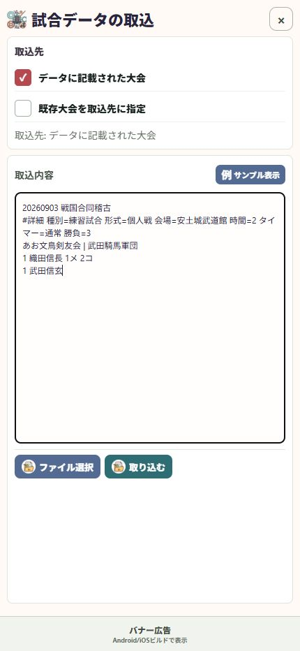

11 / 受け渡す
受け取った試合データを取り込む
ファイルでもテキストでも、内容と取込先を確認して取り込みます。
操作の入口ツール → 試合データの取込・出力 → 取込
データを用意する
受け取ったファイルを端末に保存します。テキストの場合は内容をコピーします。
取込先を選ぶ
「データに記載された大会」を使うか、「既存大会を取込先に指定」を選びます。
内容を読み込む
「ファイル選択」で保存したデータを選ぶか、取込内容へ貼り付けます。内容が入ると「取り込む」を押せます。
大会・選手を確認する
取り込む大会を選択し、重複する選手の確認が出たら次のページの判断に従います。完了後は履歴で結果を確認します。

